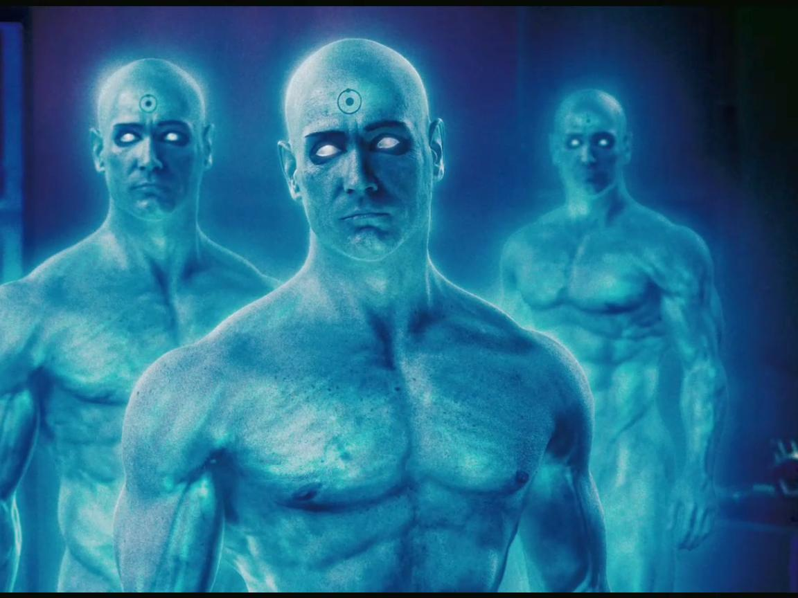

| Real Name |
Alias |
Picture |
Superpowers |
Weakness |
| Clark Kent |
Superman |
 |
- Superhuman Strength, speed, agility, and overall senses
- Both x-ray and heat vision
- Invulnerability to almost all forms of harm
- Power of flight
|
Kryptonite, Red Sun radiation, and magic |
| Thor Odinson |
God of Thunder |
 |
- Superhuman Strength, speed, and agility
- Ability to summon/control both thunder and lightning
- Can fly with his hammer (Mjölnir)
- Mjölnir also can be thrown, summoned, and used in combat
|
Vunerable to typical attacks, just at a higher degree than the average person due to his Asgardian
heritage |
| Bruce Wayne |
Batman |
 |
- Extreme willpower and indimidation
- Peak human strength and conditioning
- Genius level intellect
- Master of 127 different types of martial arts
|
Underneath the suit he is still a human; making him vunerable to any type of harm |
| Peter Parker |
Spider-man |
 |
- Heightened overall senses or "Spider Sense"
- Extremely heightened agility and reflexes
- Ability to climb walls and shoot webs
- Superhuman strength and speed
|
Although more resiliant to attacks, he is still mostly human and vunerable to numerous forms of harm
|
| Dr. Jonathan Osterman |
Doctor Manhattan |
 |
- Ability to see past, present, and future simultaneously
- Immeasurable strength, speed, and senses
- Can reconstruct matter at will
- Never needs to rest and can clone himself
- Teleportation/Flight and time travel
|
Tachyons can block his ability to foresee future events |